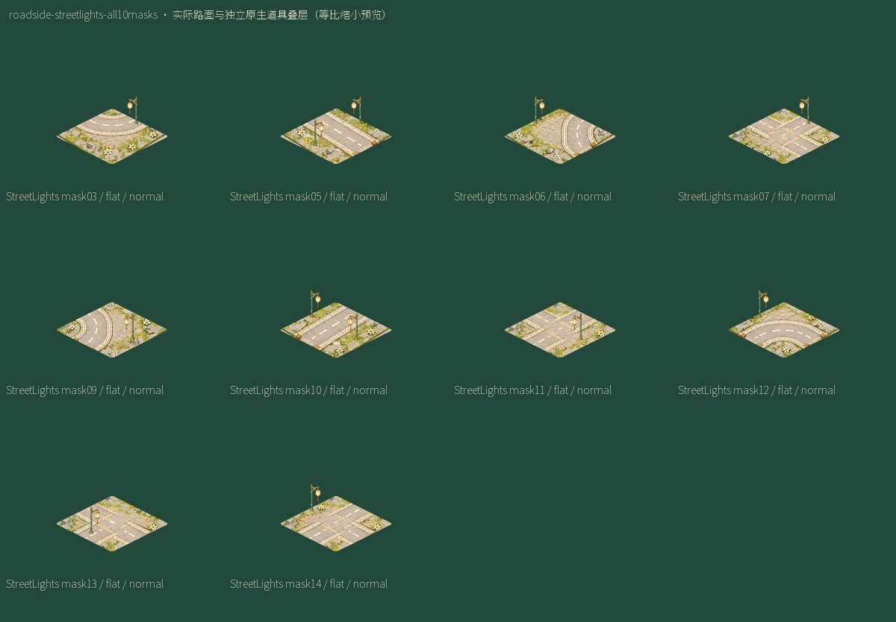
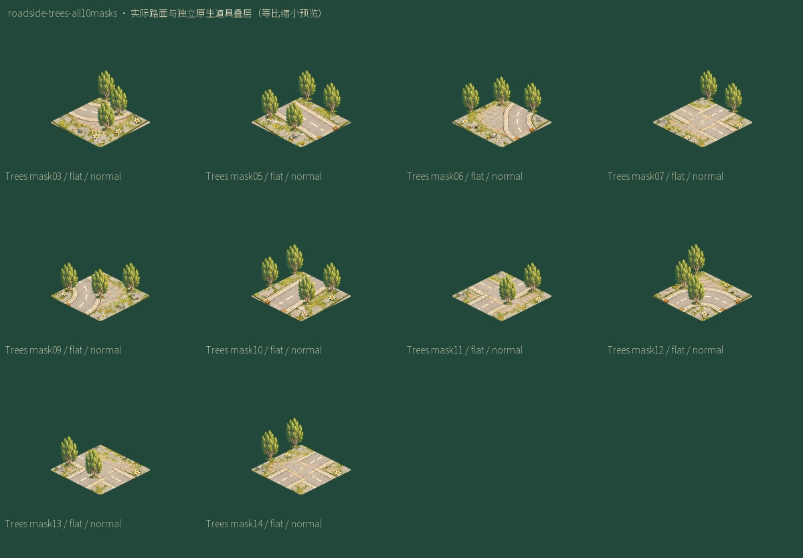
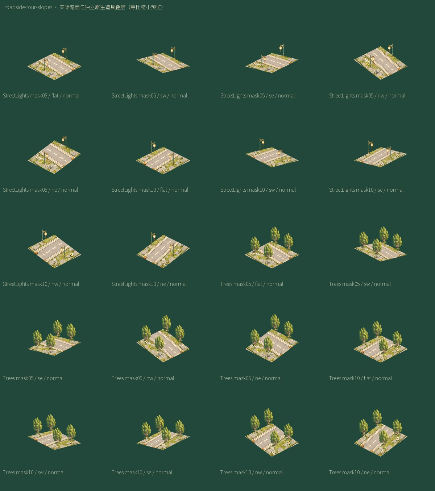
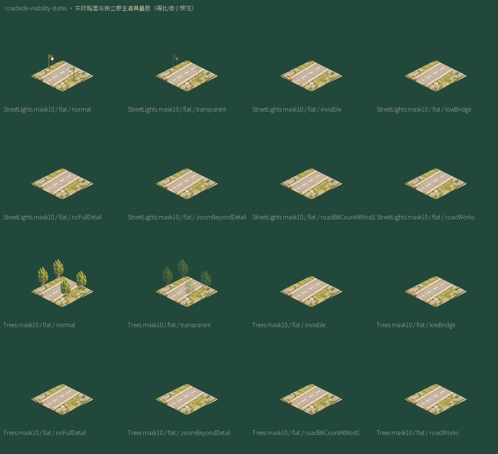
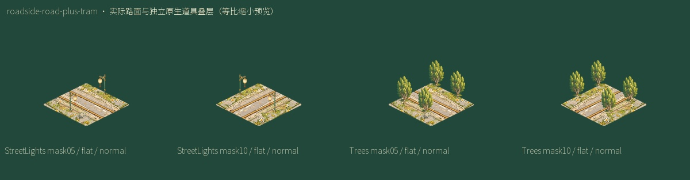
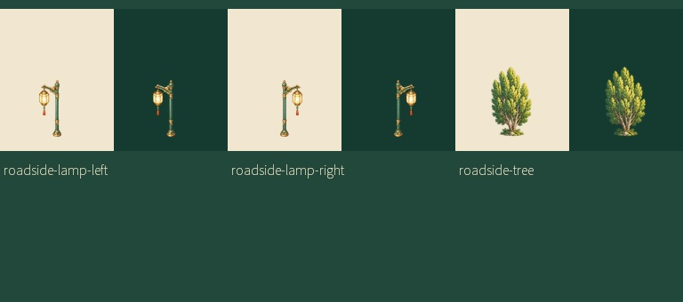

路肩街灯与树木 · 源坐标及美术状态
复用现有原生树，新增同一原生灯母图两种灯头朝向。32源mask绑定、160坡面定位组、正常/半透明PNG与不可见/低桥/远景/施工抑制合同。纯tram源条件不绘路边细节；混合road+tram按unionmask且roadCount>1使用。
源码绑定 · 规格和状态
roadside-streetlights-all10masks

roadside-trees-all10masks

roadside-four-slopes

roadside-visibility-states

roadside-road-plus-tram

roadside-deep-light-alpha
